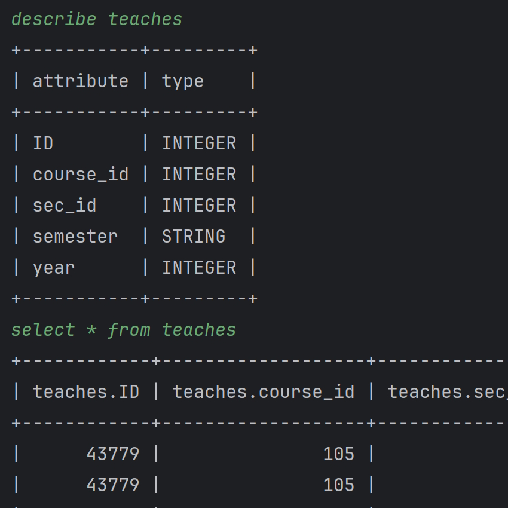
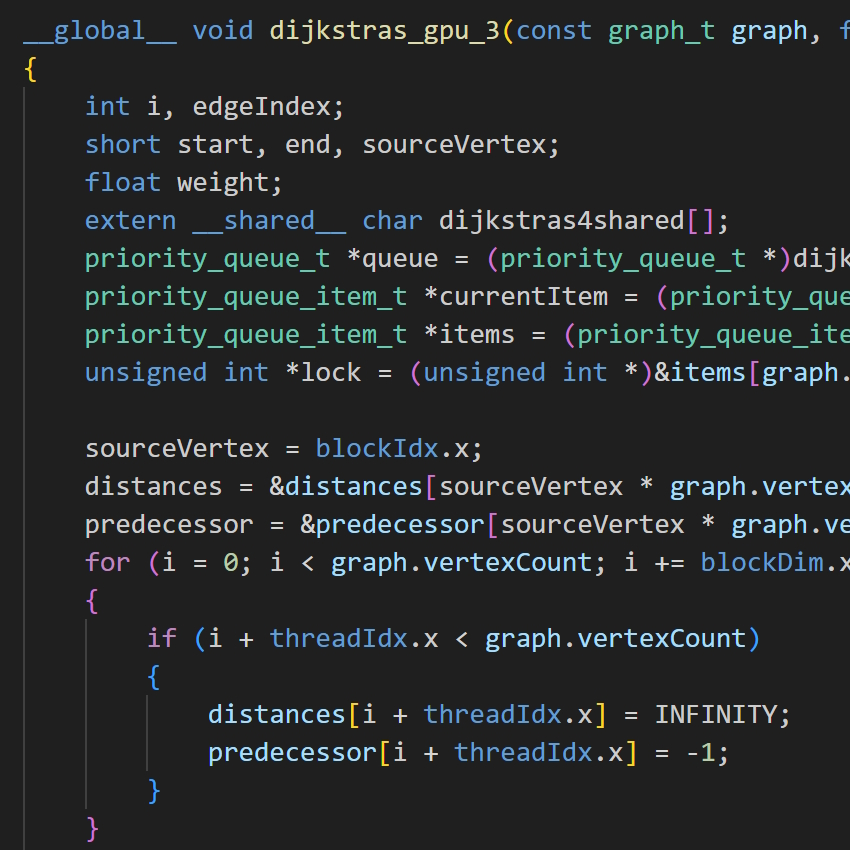
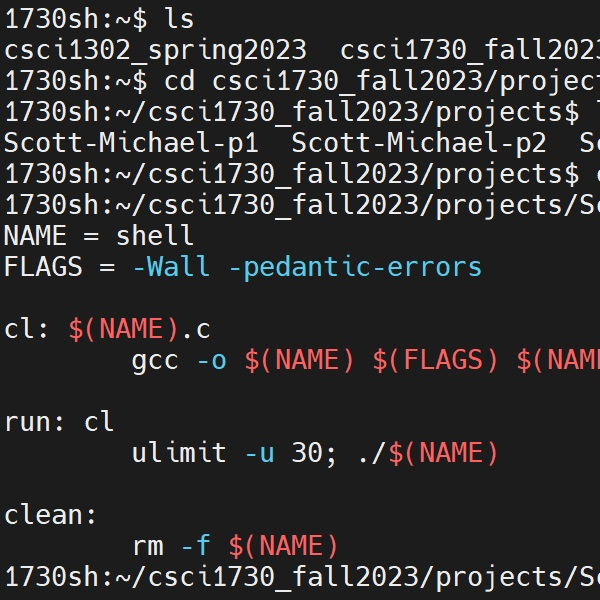

Michael Christopher Scott
10 Sanford Dr, Athens, GA 30605
+1 (678) 630-0302
mcs19358@uga.edu
Self-driven student with 9 years of experience in C#. I create game mods in my free time.
Education
University of Georgia, Morehead Honors College (expected graduation date: May 2026)
B.S. Computer Science, Mathematics Minor, Applied Data Science Certificate, New Media Certificate
GPA: 3.99/4.00
Relevant Courses:
Software Development
Systems Programming
Data Structures
Algorithms
Computer Architecture & Organization
High Performance Computing
Honors and Awards
- Dean's List
- Fall 2022
- Presidential Scholar
- Spring 2023; Fall 2023; Spring 2024
- Zell Miller Scholarship Recipient
- Fall 2022 - present
Skills
- Programming Languages: C#, Java, C, MIPS Assembly
- Frameworks: .NET, CUDA C, MonoMod
- Software: Git, Visual Studio Community, Visual Studio Code, ILSpy, paint.NET, draw.io, Google Suite
Leadership and Experience
- Volunteered forHunker Down With Housing
- August 12-14, 2022; ~20 hours
- Volunteered for theZero Waste Weekend
- April 22, 2023; ~4 hours
- Volunteered forDawgs Ditch the Dumpster and Donate
- May 3 - 11, 2023; ~32 hours
- Volunteered for Hunker Down With Housing
- August 11 - 13, 2023; ~16 hours
- Volunteered for Dawgs Ditch the Dumpster and Donate
- April 29 - May 10, 2024; ~60 hours
- Volunteered for Hunker Down With Housing
- August 9 - 11, 2024; ~6 hours
- Volunteered for Dawgs Ditch the Dumpster and Donate
- May 2 - 5, 2025; ~24 hours
- Volunteered for Hunker Down With Housing
- August 8 - 9, 2025; ~6 hours
- Member of UGA'sEcoReps Program
- August 2024 - present
Projects

Database Querying System
- MySQL-like client for interpreting SQL statements.
- Handles most normal querying logic (selects, conditions, joins, etc.).
- WIP system for allowing users to create their own compatibility files and load files others have given them.

CUDA Johnson's Algorithm
- Massively parallel GPU implementation of Johnson's algorithm for finding shortest paths.
- 95% faster than the tested CPU version.

Imitation Unix Shell
- Implements a UNIX-like shell using C.
- Uses low-level system calls such as fork, pipe, and exec.